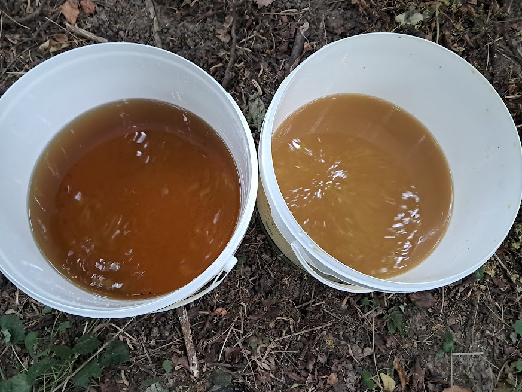
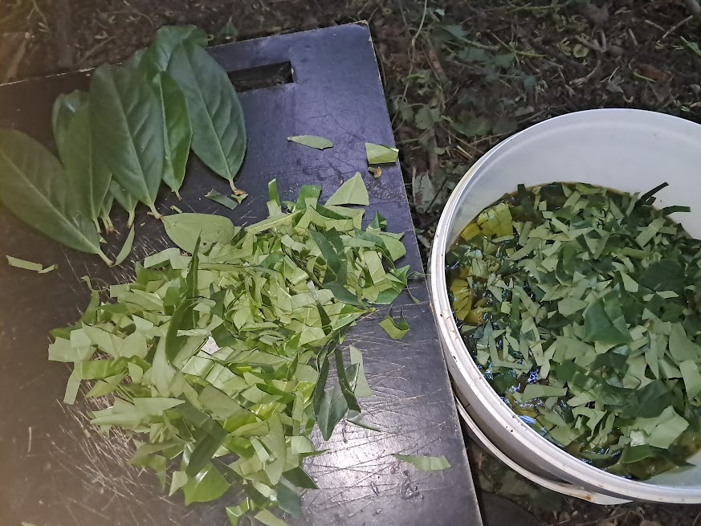

Alchemical Formulations: The Ultimate Herbal Extracts
While diving into urine therapy literature, I discovered another extraordinary piece of information: cow urine can be used to create unparalleled herbal extracts. I inputted data into an AI platform and asked it to compare cow urine to every known extraction medium. I was absolutely stunned by the result: the AI classified the cow urine herbal extraction method as the absolute best — surpassing alcohol, hydrochloric acid, glycerin, vinegar, oil, and water.
It was late May 2026, and the UK countryside was bursting with fresh plant life. Right there in my hands was the opportunity to produce the finest herbal extracts in the world. It felt like a flash of lightning from the sky.


